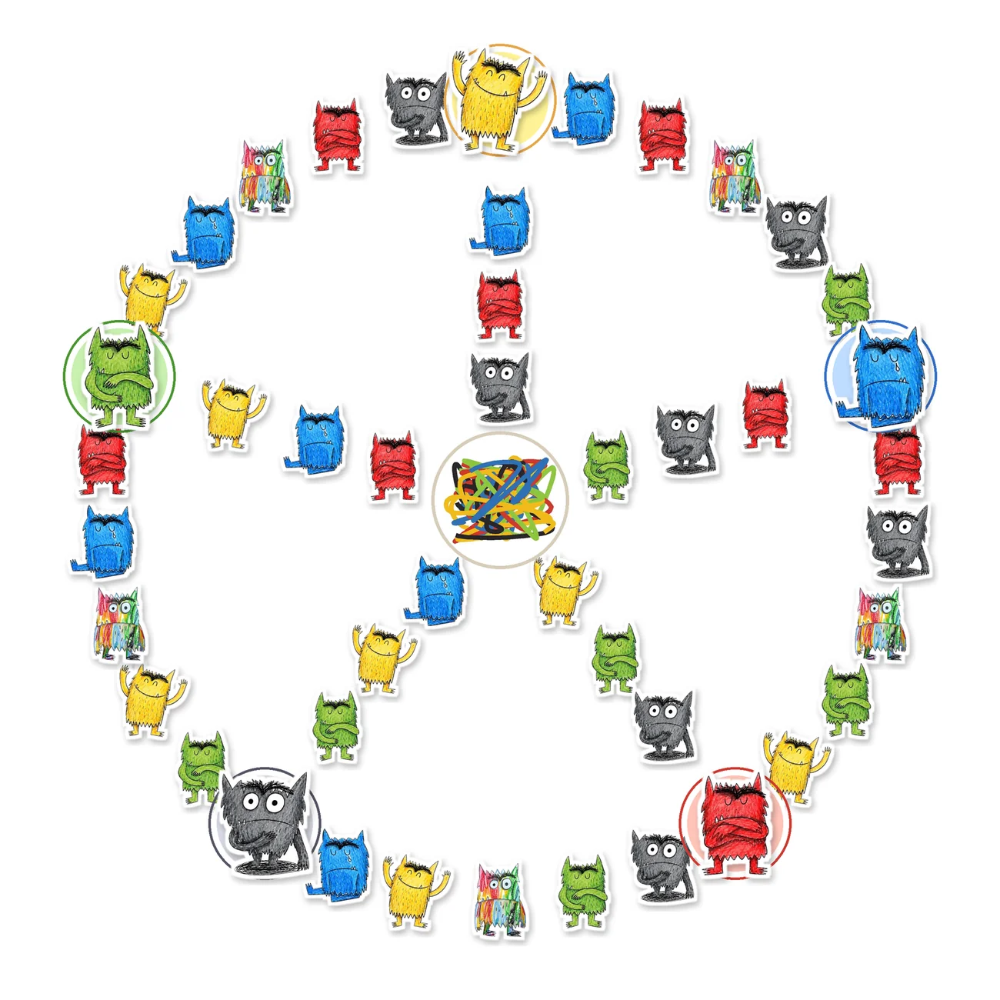
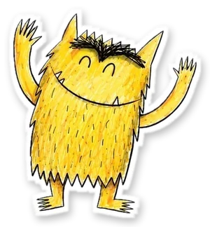
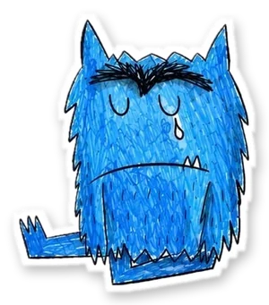
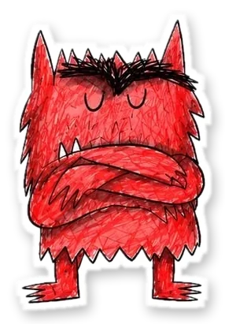
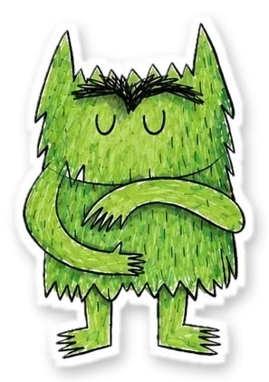
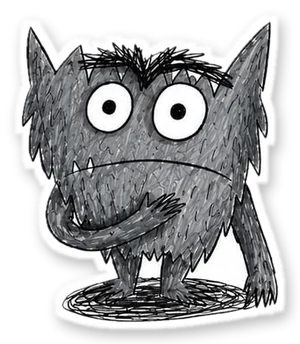
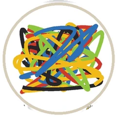
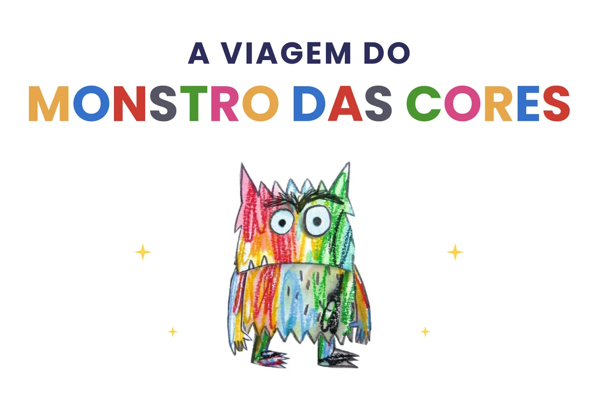

Plástica
Explorar cores, formas e materiais para dar imagem ao que se sente.
Jogo de tabuleiro
O Monstro acordou baralhado e não sabe o que sente. Lança o dado, percorre o tabuleiro e ajuda-o a arrumar a alegria, a tristeza, a raiva, o medo e a calma.






A alegria, a tristeza, a raiva, o medo e a calma estão todas desarrumadas. Para o ajudar, vamos embarcar numa aventura cheia de desafios, jogos e descobertas.
Ao longo do caminho, terão de descobrir as emoções, superar desafios e conquistar as bolinhas coloridas, ajudando o Monstro a encontrar o lugar certo para cada emoção.
Mas atenção! Nesta aventura, é importante trabalhar em equipa, ajudar os colegas e respeitar todas as emoções.
Estás preparado para esta aventura? Vamos ajudar o Monstro das Cores!
Escolhe como queres jogar. Em todos os modos percorres o tabuleiro, cumpres desafios e enches o pote com as cinco bolas.
Para jogar online, quem entra precisa de abrir esta página no Claude, com sessão iniciada.
O professor lê a história O Monstro das Cores, versão pop-up de Anna Llenas. A turma forma equipas, cada uma com um peão e um pote vazio, e todos partem do centro do tabuleiro.
As equipas jogam à vez, com um aluno diferente a lançar o dado em cada jogada, e avançam nas casas até terem o pote cheio de bolas das diferentes cores.
Ganha a primeira equipa com as cinco bolas no pote. Leva-o ao centro do tabuleiro e é anunciada como a equipa que ajudou em primeiro o Monstro a arrumar as emoções.
Lança-o um aluno diferente da equipa a cada jogada.
Anda as casas que saíram, pelos raios ou pelo círculo, para o lado que quiseres.
Os alunos leem a carta da cor da casa, com a ajuda do professor, e a equipa realiza o desafio. Antes, diz que emoção é e quando já a sentiu.
Cumprido o desafio, a equipa lança o dado outra vez. Só uma vez por jogada.
Nesta casa estão reunidas todas as emoções. A equipa que calhar nela escolhe qual a emoção que quer jogar.
Cumprido o desafio, ganha a bola dessa cor. Se já a tiver, conta como casa normal.
A carta volta ao fundo do monte da sua cor e joga a equipa seguinte.
Um caminho em círculo, com raios que vão dar ao centro. Cada casa é um monstro de uma emoção e esconde um desafio.

Cada desafio pertence a uma área de expressão. A criança não copia um modelo: experimenta, cria e comunica à sua maneira.
Explorar cores, formas e materiais para dar imagem ao que se sente.
Sons e ritmos que combinam com cada emoção.
Representar situações e emoções com gestos, expressões, postura e voz.
O corpo em movimento como caminho para expressar o que não cabe em palavras.
Para imprimir em tamanho grande e colar em cartão grosso ou K-line.
Tabuleiro, peões e todas as cartas de desafio.
Uma folha por emoção, mais as cartas da casa-pote. Imprime em A4.

Marca o que já tens. O tabuleiro, os peões, o manual e as cartas estão prontos para imprimir.
0 de 8 materiais prontos
As quatro expressões nas Aprendizagens Essenciais do 1.º Ciclo (2018) e a sua presença no jogo.
Uma mesma emoção pode ser representada através de cores e formas, explorada por meio de sons e ritmos, interpretada com gestos e expressões faciais ou comunicada através do movimento corporal. Cada linguagem acrescenta uma perspetiva própria.
Aos seis anos as crianças começam a dar nome ao que sentem e a perceber que os outros sentem coisas diferentes. As regras são simples e cada carta tem uma imagem.
Cores, formas, materiais e técnicas para imaginar soluções e expressar ideias próprias.
Explicar escolhas, partilhar sentimentos e perceber o ponto de vista dos colegas.
Partilhar materiais, negociar ideias e construir uma resposta comum respeitando as diferenças.
Observar, interpretar, perguntar e argumentar a partir do que cada criança vê e sente.
Articula-se com: